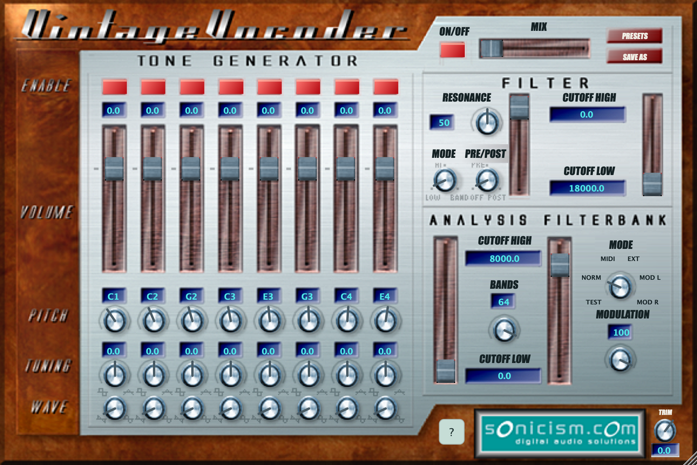
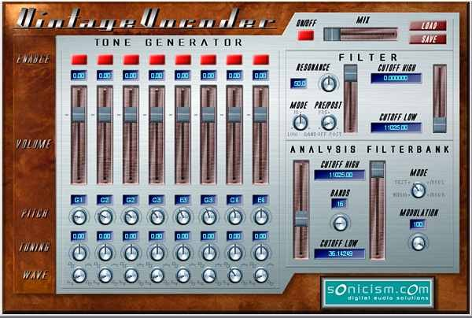

Eight oscillators. Your hands on the sound.
Blend sine, saw, square and triangle waves. Set each oscillator’s pitch, level and tuning in NORM mode, or switch to MIDI and play the carrier from your keyboard or DAW.
Sonicism, 2002. Ruminant Audio Works, today.
It really is vintage now.
The original Sonicism vocoder from 2002, brought back for modern Macs. Robot voices, singing synths and spectral mischief — with MIDI finally in charge of the oscillators.
Download for macOSFree download. No signup.
macOS 12+ · Apple Silicon + Intel · AU + VST3

Old code. New tricks.
Use speech, a drum loop or another audio source to shape a carrier. Build that carrier with the eight internal oscillators, play it with MIDI, or bring your own audio.
Blend sine, saw, square and triangle waves. Set each oscillator’s pitch, level and tuning in NORM mode, or switch to MIDI and play the carrier from your keyboard or DAW.
MIDI mode brings velocity, sustain and pitch bend to the internal carrier. Enabled oscillators set the available polyphony; the modulation wheel moves the filter cutoffs.
Choose from 1 to 64 analysis bands, set the frequency range and sculpt the result with the resonant filter. Blend dry and vocoded audio, then trim the final output.
Explore 30 factory presets, including the recovered originals and six Getting Started sounds. Save your own settings as named presets and come back to them later.
From the archives

Original design and DSP © Tom Taylor, 2002. Restoration and development by Tom Taylor.
Vintage Vocoder was released by Sonicism in 2002 — a heady time for plug-in development. Its FFT-based vocoder grew out of Tom Taylor’s undergraduate thesis, then found its way into the robot voices and sound effects of Microsoft’s epic space adventure game, Freelancer.
The code was eventually open sourced on SourceForge. Then life took over: an unrelated startup, followed by kids, left the project waiting.
Nearly 25 years later, Tom returned to finish what he started — using the OG Vintage Vocoder code, with a cheeky assist from AI to level things up. The original character and interface live on, with MIDI finally in charge of the oscillators.
It’s older code, but it checks out.
Get started
A vocoder uses a modulator to shape a carrier. Start with a voice as the modulator and the internal oscillators as the carrier.
Quit your DAW and run the macOS installer. It installs Vintage Vocoder FX as both an AU Music Effect and a VST3. Reopen your DAW and rescan plug-ins if needed.
Insert Vintage Vocoder FX on a vocal or another audio track. Choose NORM mode and play the track to hear the audio shape the fixed internal carrier. Keep the MIX control towards wet to hear the effect clearly.
Switch to MIDI mode and route a MIDI track or keyboard to the effect. Play notes while the modulator audio runs. MIDI routing to audio effects depends on your DAW; both audio and MIDI are needed in this mode.
The MODE knob selects where the carrier and modulator come from.
Need a hand with a control? Turn on the ? button beside the Sonicism badge and hover for help.
Yours to play with
A free vocoder for your Mac, ready to use in your DAW. One installer includes both plug-in formats.
Download Vintage VocoderVersion 1.6.0 · 17.5 MB · AU Music Effect + VST3
macOS Monterey (12) or later · Apple Silicon + Intel
Developer ID signed and notarized by Apple.
Free for personal and commercial use. No TayPE licence required.
Requires a compatible AU or VST3 host. AAX, Windows and Linux downloads are not included.
25febd70a5d96cf80e9e5f0644b2cac10f8828a7c5259a1023bdbc37f4f9806b